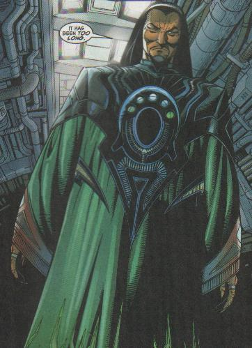
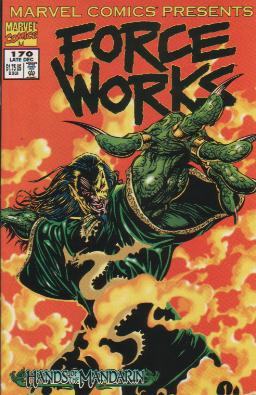
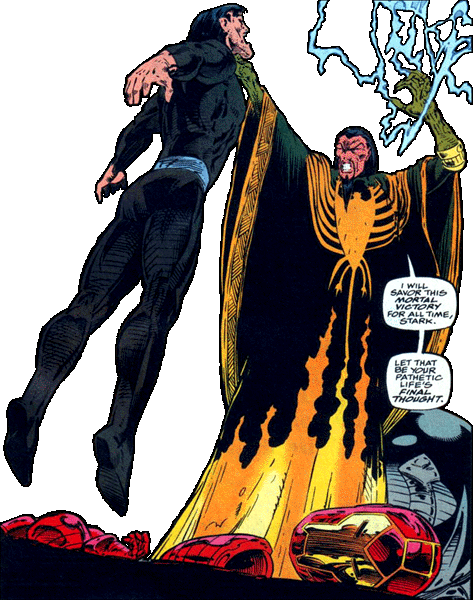

Mandarin
Marvel Comics Presents #169- flashback- Mandarin seen as a baby held in his mother’s arms. His family is an affluent family descended from the Great Khan.
Marvel Comics Presents #169- flashback- Mandarin stands as a young bureaucrat where he was renowned for his political maneuvering.
Iron Man #272- flashback- behind the scenes- origin of Mandarin's rings. An alien ship crashes on Earth. The crew of ten each hand over their ring that controls the power of the ship. In keeping with the ancient custom the rings are set upon the central dais so that if necessary one of them could pilot the ship themselves.
Iron Man #274- flashback- Mandarin walks alone through the mountains alone and lost. Mandarin enters the Valley of the Dragons. He finds a cave and as legend has it, it is guarded by the skeleton of a long dead dragon. Mandarin presses on and finds a broken space ship inside the cave. He wanders down and finds the ten rings that were left behind. Mandarin immediately recognizes them for what they are and that they can be used to his benefit, but that he was tapping but a fraction of their potential. Mandarin says that he enlisted the aid of Professor Yinsen (the same man who helped Tony Stark build the first Iron Man armor), but he was killed before he could unlock their full potential.
Iron Man #267- flashback- Tony Stark arrives in Southeast Asia to deal with sabotage to one of his corporations. Despite Wong Chu remaining in hiding Stark’s man Toshi knows about him. Wong Chu tells the Mandarin that they know despite his hiding. Mandarin says that of course they know. Mandarin says that he wanted Stark to come personally. Wong Chu says that the Mandarin risks much. Mandarin says that he risks everything because without risk life is nothing. He tells Wong Chu to activate the next part of his plan. Wong Chu has Stark captured. Toshi is killed and Stark winds up with shrapnel near his heart. Stark meets up with Professor Yinsen. Yinsen is there supposedly to build Wong Chu a weapon.
Tales of Suspense #39- behind the scenes-
Iron Man #268-FB
Tales of Suspense #50
Tales of Suspense #54
Tales of Suspense #55
Tales of Suspense #61
Tales of Suspense #62
Fantastic Four annual #3- Reed Richards and Susan Storm are getting married and Dr. Doom sees this as his chance for revenge against the only man to ever defeat him. Doom uses a high frequency emotion charger to influence every evil presence. Mandarin is drawn to the wedding because something in his head told him he must not miss it. Angel is fighting the Black Knight of the original Masters of Evil. Mandarin uses his nerve ray ring to blast Angel in the back. Reed Richards designs a machine that reverses the effects of Doom’s machine.
Avengers #20
Tales of Suspense #76
Tales of Suspense #77
Tales of Suspense #78
Tales of Suspense #84
Tales of Suspense #85
Tales of Suspense #86
Avengers annual #1- Mandarin teleports Arthur Parks the pieces he needs to reconstruct his Living Laser equipment. When Living Laser collapses a roof on Iron Man as he is trying to escape Mandarin teleports him out. Iron Man gathers the old and new Avengers to tell them what he suspects. Living Laser changes into the outfit Mandarin had waiting for him. Living Laser said he thought Mandarin was dead, but Mandarin says that he simply teleported away. Mandarin further demonstrates this skill by teleporting in the rest of his recruits- Executioner, Enchantress, Power Man, and Swordsman. Mandarin then pretends to teleport Namor to recruit him. “Namor” mouths off to Mandarin so Mandarin “destroys” him. Everyone is intimidated by Mandarin’s power thinking that Namor was real. Mandarin takes the others and shows them a mammoth diamond, which they will use to take over the world. Mandarin starts to explain his plan. Later Mandarin watches as the Avengers break up to defend the three global spots that Mandarin’s forces have attacked. Mandarin contacts Swordsman and Power Man and tells them that stage two has begun. Power Man and Swordsman are defeated. Mandarin curses them for the “eternal bunglers that they are”. Executioner and Enchantress forget about their orders and engage Hercules and Scarlet Witch in a dimensional portal Executioner creates. Mandarin tries to order them, but they just go ahead. Hercules and Wanda win. Mandarin says that he should have known better than to recruit immortals that won’t obey any mortal. Living Laser is in Africa to be opposed by Thor and Hawkeye. After they down Living Laser Mandarin’s surprise climbs out of a volcano- Ultimo. Ultimo’s beams separate Thor from his hammer. Thor tries to run hoping it will lure Ultimo from the hammer, but Ultimo doesn’t move. Thor throws a boulder at Ultimo, but Ultimo’s beams disintegrates it. Mandarin is pleased with Ultimo and praises the day he found him. Hawkeye distracts Ultimo and lets Thor get his hammer. Ultimo has Hawkeye, but Thor hits Ultimo so hard that it drops him. Thor knocks Ultimo back into the volcano. Captain America and Quicksilver find Mandarin’s space station. Mandarin says that he didn’t blast them out of space because he wanted to destroy them personally. Cap and Quicksilver fight Mandarin long enough for the other Avengers. Mandarin says that he doesn’t care if they are there and shows them his giant diamond. Mandarin explains that the diamond emits hate rays that will cause the world to kill one another and he will conquer whoever is left. The diamond bathes the Avengers and they attack whoever is closest. Wasp however was closest to Mandarin and she blasts him. Mandarin tries again, but this time Quicksilver throws off the aim. The force bounces around and blows a hole in the wall of the ship. Mandarin is sucked out into space. The Avengers destroy the ship before leaving.
Incredible Hulk vol. 2 #107
Iron Man #9
Iron Man #10
Iron Man #11
Incredible Hulk vol. 2 #114
Captain America #125
Amazing Adventures vol 2 #3- The Inhumans head out to stop the digging party that the Mandarin sent out. Mandarin watches as they defeat his crew. Mandarin turns to his elderly company and says, “It is as you said, ancient one.” The old man says that if the Inhumans really exist then their Great Refuge must exist as well. Mandarin observes the Inhumans’ powers as they beat back Mandarin’s men. The old man says that they just stopped Mandarin’s latest attempt to find the fabled Eye of Yin. Mandarin says that nobody stops him and that he will have the Eye of Yin. Mandarin tells his lackeys to prepare his personal helicopter. As the Inhumans are about to leave Karnak notices something in the ground. Mandarin has a grenade thrown at them. Medusa catches it and shields the others from what turns out to be just gas. Mandarin orders his lackeys to shoot the others down. Gorgon stomps his foot, but Mandarin uses the ring with Magna Force and drives him into the mountain side. Karnak strikes the ground and natural gas erupts into flames. Mandarin uses his neutron ring and shields himself with a molecular barrier. Mandarin then creates a vortex to extinguish the fire, and uses a stun blast to knock out Karnak. Triton grabs Mandarin’s hands, but is forced to let go as Mandarin causes ice to form up Triton’s arm. The ice hardens and traps Triton and Mandarin turns his attention to Black Bolt. Energy starts to crackle from Black Bolt. The ground below Mandarin becomes soft and Mandarin sinks into the ground. Black Bolt becomes curious as to what Mandarin was looking for. Mandarin asks the old man how his plan is progressing. The old man says that it goes according to plan and that the Inhumans are going to find the Eye of Yin for him. Mandarin had sent a robotic version of himself to face the Inhumans. The Inhumans discover a temple built by the ancients. They come to an idol. The idol’s closed eye opens and power pours out.
Amazing Adventures #4- Black Bolt snatches the Eye out of the idol, but as they look at it the Eye of Yin is snatched from his hands. The Inhumans think it some trick of the ancients, but the Eye is really being pulled by the magnetic beam of the Mandarin’s rings. Mandarin dissolves the power’s shell and absorbs the cosmic energy into his rings. The old man reminds Mandarin that it was his studying that made this possible. He reminds Mandarin of the great reward he was promised. Mandarin banishes the man to another dimension and says that it is a fitting journey for a inquisitive scholar. Karnak comes upon this scene and moves to attack. He means to collapse the chamber with one well-placed blow, but Mandarin bores a hole to the center of the Earth. Karnak starts to fall, but luckily for him Medusa arrives and saves him with her hair. Triton also arrives and the three of them advance on Mandarin. Mandarin traps them all within an atomic cage and starts to fill it with water. Mandarin tells Triton to teach his friends to breathe water. Black Bolt and Gorgon arrive and Black Bolt quickly uses an electron charge to shatter the cage. Mandarin starts to gloat about all his power and all the destructive things he will do with it. Gorgon stomps the ground. Mandarin says that his patience is growing short. He goes to kill the Inhumans but is frozen in place for some reason. Black Bolt hypnotized Mandarin as he ranted about his power. Mandarin collapses. Gorgon takes Mandarin’s rings off and carries him out. Black Bolt collapses the temple with the rings inside.
Iron Man #57
Iron Man #58
Iron Man #68
Iron Man #69
Iron Man #70
Iron Man #100-FB
Iron Man #98
Iron Man #100-FB
Iron Man #99
Iron Man #100
Iron Man annual #5
Iron Man #179- Working as a laborer at a shipping docks the Radioactive Man spots Iron Man who is guarding a shipment of film. Radioactive Man reports to Mandarin. Mandarin tells Radioactive Man that Iron Man might be trying to intercept their shipment. He tells him to lure him away, and if possible try to kill him. Later, Radioactive Man is forced to report to the Mandarin that the equipment was destroyed. Mandarin says that his plans are now delayed for months. He says that he holds Radioactive Man responsible and that Radioactive Man should be frightened.
Iron Man #180
Iron Man #181
Iron Man #242- flashback- In his mountain stronghold the Mandarin experiments on his rings. Mandarin was trying to extend the range of his mento-intensifier ring from feet to miles. An accident renders Mandarin motionless. Many followers take the opportunity to run away, but his loyal servant Li Fong helps Mandarin escape through hidden tunnels before soldiers ransack his castle. Li Fong and the motionless Mandarin are taken in by Shan-Tu monks. Mandarin wakes up and has lost much of his memory. He remembers how to use his rings, but little else. Mandarin came to believe that his rings came from his ancestors and not an alien ship. He decides that his destiny is to raise China to the ruling power of the planet. The monks decide to follow him as the Hand. Mandarin constructs a powerful business and criminal cartel.
Iron Man #241- Iron Man chases down the assassin of the man Hao that Tony Stark was supposed to meet with about setting up a branch of Stark Enterprises in Hong Kong. Iron Man grabs the guy, but instead of talking the assassin says that what he does, he does for the Hand and disintegrates himself. A single ring falls from his hand and hits the ground. The ring then disintegrates as well. Later on his private island the Mandarin stands as Xu opposes him. Mandarin says that the reward he is offering to any who can best him in unarmed combat is very generous. Mandarin needs to only use one hand to deflect Xu’s attack. He grabs Xu’s hand and discovers that he has a lacquer on his fingernails. Mandarin asks if he is vain or just greedy. Xu apologizes and says that the toxin was only meant to slow Mandarin not to kill him. Mandarin says that Xu was his favorite as he puts on his rings. Mandarin says that Xu shows no honor, and that honor is all. Mandarin says that without honor life is useless. Mandarin kills Xu. Mandarin stands next to the pile of ashes that was Xu, and says that he trusts that the rest have learned from this unpleasantness. Later Tony Stark is talking with his attorney Felix Alvirez. Alvirez says that this “Zhang Tong” seems to have the entire government in his pocket. Later at the afternoon meeting Stark meets Zhang Tong. He notes that while his appearance has changed that Zhang Tong is the Mandarin. Tony wonders why he doesn’t attack and why he doesn’t seem to recognize him. Zhang Tong says that Stark can’t do business in Hong Kong without his blessing. Zhang says that if Stark will work for him that he will let him. Stark says that he owns his own company, but Mandarin says that he might not for long. Stark leaves. The Hand kidnaps Jim Rhodes. Later still Mandarin meets with the Hand and tells them to bring him honor by defeating their enemy and restore China to its rightful place as the world’s ruling nation. As Iron Man arrives one of the Hand uses his ring to force Iron Man to land. Iron Man is then surrounded in black light. Iron Man uses his sensors to attack the Hand. Another attacks him with ice. As the Hand is defeated each ring returns to the Mandarin. Iron Man finally reaches Mandarin, but Mandarin doesn’t even stand up. Mandarin reveals to Iron Man that he had Jim Rhodes, Mrs. Arbogast and Felix Alvirez captured. Mandarin proposes a one on one duel. If Stark wins he can have his friends back and will be allowed to operate in Hong Kong, but if Stark loses he has to work for Mandarin exclusively forever. Iron Man accepts.
Iron Man #242- Tony Stark is forced to meet with Zhang Tong to concede that Zhang Tong have 70% of the video right to the upcoming battle that Iron Man will be forced to fight against the Mandarin. Mandarin returns to his island fortress and prepares for the fight. His servant thinks about how changed the Mandarin is. Li Fong gives the Mandarin his robes after he is finished. Later as Mandarin goes over the rules of the contest and the production crew checks its equipment Soo Lin, a friend of Tony’s, pretends to be a new crewmember. The action begins. Mandarin flames the sand turning it into molten glass. He then freezes the glass and turns it hard. Iron Man breaks out. Mandarin traps him in a vortex beam. Soo Lin uses a computer to hack into Mandarin’s system and frees Stark’s friends. Iron Man gets free and tries an electromagnetic pulse. Iron Man’s armor is rendered useless for six minutes, but Mandarin’s rings seem unaffected. The cameras are also down. Mandarin knows that the prisoners have escaped. He gives the Hand five of his rings to deal with it. Iron Man’s armor goes back on, but he doesn’t want Mandarin to know so he won’t call his rings back. Mandarin downs Iron Man. He tells the Hand to go ahead and kill the prisoners. Iron Man blasts Mandarin. He keeps pouring it on until Mandarin falls unconscious.
Avengers annual #19/3-FB
Avengers #311
Uncanny X-Men #256- Mandarin stands looking out his window as Matsuo Tsurayba stands behind him after killing all those who made up Mandarin’s Hand. Mandarin asks him why he should not simply kill him. Matsuo introduces himself and says that he rid Mandarin of his lesser services so that he could offer him the services of the true Hand. Mandarin asks Matsuo if he is jonin or common genin. Matsuo replies that he is but a messenger. Mandarin asks what he needs with a messenger or the Hand when the least of his rings is enough to turn him into dust. Matsuo says that it is not the weapon but the wielder. Matsuo says that to defeat Mandarin all he needs to do is summon Iron Man. Mandarin tells him to continue. Matsuo says that before the turn of the century that China will return to sovereignty and that there has never been a better time for one to carve out a kingdom for himself. Mandarin says that he knows all this. Matsuo says that people are not going to follow one who can be defeated by a common yankee “superhero”. Mandarin asks what his solution is. Matsuo says that he offers a means to know his enemy’s secrets so that he might strike at them by cutting out their hearts. Mandarin tells Li Fong that he and his guest will take tea. Betsy Braddock undergoes a fantasy that starts in her own childhood. Everytime something bizarre happens she seems to pick up another ring and put it on. She pretends to fly a jet and winds up in a real one briefly. She has a sword fight with her brother that turns real for just a moment. She drives a Ferrari car at 180 mph. She goes to Mojo’s Body Shoppe and he transforms her from a westerner into an Asian body. Mandarin watches Betsy Braddock hooked into a machine with Matsuo. He asks who she is. Matsuo says that they think she is an X-Man. Mandarin says that he thought they were supposed to be dead. Matsuo says that they must be as skilled in deception as they are. Matsuo says that they found her in shock and with her memories totally fragmented. Mandarin watches their psychic defining her new reality. Mandarin asks why they are giving her to him. Matsuo says that an order of assassins need employment. In her mind Betsy Braddock demands Storm’s ring. Storm hands it over, but Betsy kills her just the same. Betsy wants all ten rings. She kills Colossus for another. She moves on and kills Dazzler for her sixth. Havok is running in Genosha and is about to fall from a great height. Psylocke says that she won’t let him drop for his ring. She takes the ring and then kills him so he won’t drop. Rogue and Carol Danvers lie separated on the ground. Psylocke picks up their ring. Suddenly Psylocke is confronted with Slaymaster. Matsuo is amazed at how Psylocke is resisting them. Slaymaster starts to take off her rings, and then rips out Psylocke’s eyes. As Psylocke fights back the Slaymaster armor is knocked off and underneath reveals the Mandarin. Mandarin tells Psylocke to accept him as her lord and master. Psylocke slays him. The machine is destroyed and the Hand’s pyschic is dead, but Psylocke kneels before Mandarin and returns his rings to him. Psylocke says that Mandarin is her master.
Captain America #366- Mandarin continues to sit at the table with the other villains as Loki returns. Loki asks if they have reached a decision on their masterstroke to the Acts of Vengeance. Kingpin says that this is going to take more than one meeting and suggests they retire for now. The vote pass unanimously and each villain heads back towards the dimensional door they passed through to get there.
Avengers #312
Uncanny X-Men #257-BTS
Web of Spider-Man #61
Uncanny X-Men #258
Avengers #313
Avengers West Coast #55
Avengers annual #19/3-FB
Nick Fury vol. 3 #24- Mandarin is using living statues to attack the J-2’s. Once in Washington DC, another in Berlin, and finally in the Soviet Union. Captain America is with Nick Fury as he watches tapes of the event. He asks if they are sure that they were statues and not disguises. They are shown another tape where all the statues were verified to be stone or bronze, and yet two hours later they tried to attack the president. When the statues were defeated by the secret service they eventually transformed back into men. Fury takes off to figure out who it is. On the southern mainland coast of China the Mandarin sits in his castle. One of Mandarin’s lackeys shows him how easily their rings can be manipulated to alter stone. Mandarin asks whose rings they are. His minion corrects himself and says that it is all in Mandarin’s name that they do this. Another of Mandarin’s lackeys says that the deaths of one who might threaten them is a worthy pursuit. Mandarin says that the J-2’s could never harm him, but he does like the irony of using their monuments against them and allows them to continue. SHIELD discovers the satellite, but need one more beam to triangulate the origin. Fury attends the next J-2 meeting. The statues come to life and they get a point in Macao China. Fury gets a file on Mandarin from Iron Man. SHIELD goes to China. Mandarin invites them in. He says that he is surprised that they found him so quickly. Mandarin asks if it was the satellite that gave him away. Fury says that it was. Mandarin says that his two men didn’t think to cover their tracks. Mandarin’s two men start to advance on Fury. Mandarin says that he did enjoy the view here, but that he has to leave now. Mandarin calls back the two rings on his lackeys. Mandarin says that these two will go with them. Fury tries to shoot Mandarin to prevent him, but Mandarin just puts up a shield and teleports away. Mandarin says that next time he will be the planner and the winner.
Iron Man #259
Iron Man #260
Iron Man #261
Iron Man #262
Iron Man #263
Iron Man #264
Iron Man #265
Iron Man #266
Iron Man #267- In his nightmare the Mandarin is running inside his imperial palace. He makes it outside, but still feels a claustrophobic closeness. Mandarin looks up to see a giant statue crush him. Mandarin wakes up in a sweat. Chen Hsu floats into the room and asks Mandarin if it was the same dream again. Mandarin says that it is always the same dream. Chen Hsu says that it will continue coming as long as he refuses to learn its lesson. He says that the dream reminds Mandarin of his mortality. He reminds Mandarin that his father was killed the same way. Mandarin says that his father was a lesser man than he is. Mandarin says that he was bound by his own mortality. He says that he understood nothing of the world beyond China and nothing of power. Mandarin looks out to see Fin Fang Foom sleeping on his yard. Mandarin says that all that matter is power and the accumulation of power. Later in America Tony Stark feels the touch of another’s mind on his own. He thinks back to the first time he felt it.
Iron Man #268
Iron Man #269
Iron Man #270
Iron Man #271
Iron Man #272- Chen Hsu, the captain of the long stranded space ship, mentally contacts his navigator, Fin Fang Foom. Fin Fang Foom asks that the Captain not stop him now for in another moment he will destroy the “armored one”. Tony Stark finds out through the Chinese Premier that Iron Man has been defeated by Fin Fang Foom. Stark mentally commands an Iron Man armor from his hotel room. Mandarin stands with Fin Fang Foom and Chen Hsu and says that it was too easy. He says that Iron Man should not have fallen in less than twelve hours. Chen starts to suggest that perhaps the weakness was Mandarin’s when they hear a noise. They see another Iron Man coming. Mandarin says that he senses the presence to his old greatest foe and says that this is the real Iron Man. Iron Man flies at Fin Fang Foom.
Iron Man #273-Chen Hsu mentally contacts the other dragons to come to him and Fin Fang Foom. Iron Man, who unknown to the others is just a remote controlled armor, is fighting Fin Fang Foom. Iron Man is moving slower because of the relay of the commands having to go through a satellite. Jim Rhodes doesn’t know that Stark isn’t in the armor, and is watching him get clobbered. He tries to get up to help, but collapses. Mandarin says that was a valiant effort, but that it is useless without the power to back it up. Mandarin holds Rhodes in his hands. He says that he knows that he is not the true Iron Man. Mandarin wonders how many times when he defeated Iron Man was the victory hollow because it was not his true foe. Rhodes says that Mandarin should talk and says that there was a time when the Mandarin wouldn’t let a dragon do his fighting for him. Mandarin throws Rhodes down and says that he tires of the game back and forth. Mandarin says that no matter who is in the armor that Iron Man dies today. Iron Man hooks up two power lines to his armor. He blasts Foom and knocks him over. Mandarin tells Iron Man to leave the dragon alone, and says that the taunts of his friend “struck home”. Mandarin animates a giant rock and has it fall on Iron Man. Twenty minutes later Iron Man digs his way out of the rock to find Mandarin and Foom waiting for him. Mandarin and Foom start to attack Iron Man. Iron Man is forced to retreat. Foom shouts that he must not get away and rob him of his victory. Foom says that he is going to chase him down, but Mandarin says that he promised Iron Man death although he has no interest in the death of cowards. Mandarin turns to Jim Rhodes in the broken Iron Man suit and says that he will die instead. Suddenly Mandarin is stunned to see the other dragons joining Fin Fang Foom.
Iron Man #274- Foom shouts, “The Dragons! The Dragons! The Hour of Gathering has come at last!” The Dragons all bellow in unison and the Mandarin screams in agony, as the noise is about to split his head open. Chen Hsu turns into a dragon as well and joins Foom and the others. Mandarin recognizes the face of Chen Hsu, the man he had thought was his friend, and realizes that he has no idea what has been going on around him. The Dragons bellow. Rhodes notices that Mandarin is just as awestruck as he is and asks how he got involved with this crowd. Mandarin tells “Iron Man” to watch it because he can still kill him with a wave of the hand. Mandarin decides to tell “Iron Man” about his origin. Mandarin says that he has always been operating at but a fraction of the power of the rings. He says that with their full power he would have been unstoppable. Chen Hsu and the other dragons take human form and approach Mandarin. Mandarin asks Chen Hsu if he has come to mock him, but Chen Hsu says that Mandarin has learned much that will serve him as the Dragons take over the planet. Chen Hsu says that it is now time to turn over the rings to their rightful owners. Mandarin refuses saying that Chen Hsu was teaching him how to be the world’s ruler and now he is expected to be a servant. Mandarin says that where he rules he rules alone. Chen Su, Foom, and the other original ring holders begin to tap into the rings’ powers and they start to use it against Mandarin to get him to release the rings. Chen Hsu says that if Mandarin resists that his fingers will simply come off with the rings. Mandarin is in agony, but he does not weaken. He uses the lessons that Chen Hsu taught him and turns the center of his suffering into an unbreakable resolve. Mandarin takes possession of the rings full power. He laughs. Chen Hsu says that Mandarin’s mammalian traits are all that prevent him from mastering the rings. Mandarin blasts at Chen Hsu, but Chen has transformed back to dragon form. Foom tells Chen Hsu that he must kill Mandarin now. Chen agrees, but when he breathes fire at Mandarin the rings are now instinctually responding to Mandarin and shield him. Mandarin and the Dragons find themselves stalemated when Iron Man arrives.
Iron Man #275- The Dragons attack Iron Man, but Iron Man is dodging their attacks. The fighting goes back and forth between the Dragons and Iron Man. Jim Rhodes tries to interfere, but Foom just grabs him and throws him away. Rhodes hits the ground. He lifts his head and sees the Mandarin sitting on a throne like chair thinking. Mandarin gets up considering power and betrayal. He doesn’t even notice Rhodes standing there. Jim puts his hand on the Mandarin’s shoulder, but Mandarin whispers “never touch me”. Mandarin blasts Rhodes through a mountain that is felt seven thousand miles away in California. Mandarin thinks about how he got into all this. He strikes out against the Dragons with Iron Man. Chen Hsu changes into his Dragon form and says that it is time to end this foolishness. Chen Hsu says that Mandarin doesn’t have the power to wield the rings as they do. Iron Man thinks and then tells the Mandarin to give him the rings. Mandarin says that Iron Man must be mad to think he would give his greatest weapon to his greatest enemy. Iron Man and Mandarin lock hands, but Iron Man moves around behind Mandarin and uses his own power to power the Mandarin’s rings. The resulting power is noticed worldwide. A piece of fabric of creation is ripped from its proper space and time. The power waves continue for sixteen hours, and when they finally stop the Dragons and the Mandarin are nowhere to be found. Six weeks pass and in the house of Li Sung the Mandarin lies recovering. He is better off and not as close to death as he was when they found him. The Mandarin lies in bed unconscious with bloody stumps where his hands used to be.
Iron Man #306
Iron Man #307
Iron Man #308-Mandarin walks, with the village of his convalescence forgotten, to the place of his last defeat. He has taken no food or water. He is looking for his rings. Mandarin finds one of the rings and bends over to pick it up. He places it on his finger. Hours pass and Mandarin does nothing but search fro his rings. He follows a psychic bond that he shares with the rings. One by one Mandarin finds them until all ten rings are back on his fingers. Mandarin places the final ring upon his finger and looks up to see a castle in the distance. Mandarin knows that his destiny awaits him inside.
Iron Man #309-Mandarin walks in his ancient citadel. The citadel is ancient beyond all human memory, and yet the Mandarin recognizes every brick and stone. Mandarin has been here before in his dreams. While in his coma Mandarin walked the halls in spirit. Mandarin also realizes that he has been expected. Mandarin reaches out and touches the Heart of Darkness. Power flows over Mandarin. He says that he sees it now. He understands that it has all been by design. He understands that all his defeats have been part of the process. He says that Iron Man is the anvil against which he has been tempered like a blade and that now the process is complete. Mandarin’s eyes glow as he laughs.
Marvel Comics Presents #169- Mandarin stands with his hand on the Heart of Darkness. Mandarin says that he understands now why the voices in his head called him back from his comatose state. The voice in his head says that his destiny awaits him. Mandarin asks what this place is, and the voice replies that it is the proving ground of his soul. It says that it is the ground where his fate will be won or lost. The voice says that Mandarin has squandered his life trying to conquer the modern world. Mandarin is shown vision of his own past. It says that Mandarin cannot defeat his opponents using his opponent’s own tricks. It says that Mandarin has to discover his greater power that lies in his spirit. Mandarin asks how he might atone for his past. The voice says that it isn’t atonement, but victory that is necessary. Mandarin is faced with all the different versions of himself from the past. The voice says that Mandarin must engage them and emerge victorious.
Marvel Comics Presents #170- Inside the Mandarin’s mind he stands against all his previous incarnations. Mandarin has to defeat them to gain mastery over his past failures. Mandarin asks what mistake of the past he faces now. The first says that he is foolish youth. Foolish Youth blasts Mandarin. Mandarin says that he put so much faith in the rings, but that they cannot protect him from defeat. Self-Defeating Haste and Unrestrainted Ambition come forward. Mandarin says that he waits for them to destroy him, and that he has all the time in the world. Mandarin that worshipped technology steps forward. Mandarin says that he is a foolish child and tears the armor off him like paper. Mandarin comes face to face with Arrogance. He bows before him and watches as Arrogance breaks apart. With all his past incarnations defeated Mandarin stands ready to walk through the Doorways of Power. Outside the castle a group of red army soldiers are walking by a wreck of a castle. Suddenly the castle is transformed. Mandarin appears holding the Heart of Darkness. The army demands answers, but Mandarin says that it is not for him to demand, but obey. Mandarin tells them to consider their fortune for he has chosen them to stand by his side.
Iron Man #309- Mandarin has been idle ever since touching the Heart of Darkness. Mandarin finally says, “Soon, very soon, the hour will arrive when the hands of the Mandarin shall strike!”
War Machine #8- Mandarin watches Iron Man and War Machine battling through the Heart of Darkness. Mandarin warns them to be careful not to kill each other because after all the defeats he has put up from them the right to kill them belongs to the Mandarin. One of Mandarin’s Avatars says that it is inconceivable to think that Mandarin was defeated. Mandarin says that he is only defeated by the worthiest of adversaries. Iron Man’s face is pictured on the Heart of Darkness and Mandarin says that he has been defeated many times by that one, and when War Machine is pictured Mandarin says that though his armor is new he knows his moves and that one has defeated him too. Mandarin says that they were both present when his hands were taken from him. Mandarin holds up his new dragonesque hands and says that now he has far worthier fingers on which to wear his rings of power. Mandarin adds that the two of them will live long enough to witness the end of their world and the beginning of his.
Iron Man #310- Mandarin continues watching Iron Man and War Machine fight in the Heart of Darkness. He is pleased with how long it lasts because it will leave them exhausted before him, and when they are at their lowest ebb he will strike. Mandarin sends out his Avatars to Hong Kong. Mandarin prepares to ensure the attendance of their honored guests. To stop the damage Stark’s head of security shoots both Iron Man and War Machine with an electro-magnetic pulse. Both armors are left useless. As Stark and Rhodes apologize to each other the Mandarin teleports onto the scene. Stark can’t see him, but War Machine can. He says that Stark isn’t going to like it. Mandarin says that the gods are truly guiding his hands. He says he thought they would be tired, but this is more convenient than he dared dream. Mandarin teleports out with Iron Man and War Machine.
Force Works #6- Mandarin’s Avatars start destroying Hong Kong. Mandarin sits before Iron Man and War Machine enjoying the irony that the battlesuits that have been used in the past to defeat him are now his enemies’ prisons. Mandarin says that there is an aura around them that nullifies all technology. Mandarin says that he longs to unmask Iron Man, but that he won’t spoil that for now. Instead Mandarin unmasks War Machine. Rhodes asks if Mandarin remembers him. Mandarin says that he will never forget and then blasts Rhodes. Stark says, “in the name of God, Mandarin…” Mandarin reminds Iron Man that he is the only god there. In Hong Kong, Force Works is fighting Mandarin’s Avatars. Century recognizes the power surrounding the Avatars. He sets out to find its origin. Iron Man tells Mandarin that he is killing War Machine. Mandarin says that it is his intention to do so, and then to do it to him. Mandarin says that if Rhodes’ screams are bothering him that he will have them muffled. Mandarin orders War Fist to replace War Machine’s helmet. Rhodes tells Iron Man not to give Mandarin the satisfaction of seeing him upset. Mandarin says that the replacement shows more courage than the original. Mandarin asks Iron Man if he has grown soft. Mandarin makes it clear that he has won their war and that they will both die. Mandarin is about to kill War Machine when Century enters. Century is looking for the rings, but quickly tries to protect War Machine at Iron Man’s request. Mandarin blasts War Machine and Century. All that is left of them is Century’s staff Parallax. Mandarin asks Iron Man how it feels to be the loser.
War Machine #9- Mandarin has created an anti-technology field that has forcibly ejected China from the modern world. Mandarin sits holding Parallax, Century’s staff, as he watches his Avatars pound on the motionless Iron Man. Iron Man’s armor won’t work as result of the anti-technology field. Mandarin tells Ancestor and War Fist that it is enough for now. Mandarin, who mistakenly believes Century and War Machine dead, tells Iron Man that even though his two friends are dead that he is going to deny him that respite for a while longer. Mandarin remarks that Century’s staff and his rings seem to know each other. Mandarin says that perhaps he finally holds the secret to the life source of his power, and the key to more than even he ever dreamed. Iron Man tells Mandarin not to keep him alive too long because the first chance he gets he is going to kill him. Mandarin says that it is nice that he does have baser emotions. He tells him to dream of his revenge, and that he doesn’t want his spirit broken until the end. Mandarin tells the Avatars to watch Iron Man as he walks out. Force Works get directions to Mandarin from the one Avatar they managed to keep from escaping. Century manages to get War Machine’s armor to function somewhat by encasing it in metal that existed in ancient China. Force Work is flying towards the Mandarin when their ship enters the anti-technology field and spirals to the ground.
Iron Man #311- Mandarin tells his Avatars to look at the enemy trapped within his useless armor. Iron Man says that this isn’t the first time Mandarin has thought him defeated. Mandarin says that he has not forgotten those humiliations particularly the one that cost him his hands and his rings. Mandarin says that the gods have granted him new hands to control the rings. Iron Man says that he thinks that the hands aren’t from gods, but from alien mutation from the rings. Mandarin shouts, “Silence!” and he blasts Iron Man. Mandarin says that he was once like Iron Man and turned his back on the wisdom of his ancestors. Mandarin says that he adopted the ways of the west, but that caused him defeat after defeat. Mandarin says that he has been remade and he knows now that it is his destiny to bring about the world’s salvation from all that corruption. Iron Man says that Mandarin has finally snapped. Mandarin blasts Iron Man again. Mandarin says that blind technocrats like him are the mad ones. Mandarin says that Iron Man has no idea of the power at his disposal. Mandarin says that fate lead him to this ancient castle, which resides on an intersection of powerful lines of Feng-Shui. Iron Man says that Mandarin has never used magic before. Mandarin says that all that is necessary is knowledge and power, and that he has all of both that he needs in the Heart of Darkness. Mandarin says that the Heart of Darkness has been waiting for his quickness, his intelligence, and his will to be able to utilize its magic. Mandarin summons a servant. He plucks energy from the Heart of Darkness and molds it into a mask. Mandarin puts the mask on the servant and transforms him into Turmoil, another Avatar. Mandarin blasts Iron Man with his heat and freezing rings at the same time. Mandarin tells the Avatars to leave and that this victory is to be his alone. Mandarin uses his disintergrator ring and opens Iron Man’s mask. Mandarin unmasks Iron Man and says that he will not be able to hide his pain from him this time. Mandarin says that he figured that Tony Stark was the one true Iron Man anyway. Mandarin grabs Stark by the throat and says that in both his incarnations he is what needs to be destroyed in the world. Mandarin says that they are like Yin and Yang, east and west, science and mysticism. Mandarin adds “living and dying” as he throws Stark away against the wall. Stark thinks about how his techno organic artificial nervous system is slowly shutting down in the anti-technology field. Because it is partially organic though it hasn’t failed completely though. Stark starts to say that if he wasn’t trapped in that armor he would do something, but Mandarin interrupts and says that Stark is nothing without his armor. Mandarin cuts the armor off Stark and says that Stark has been an honorable foe, and therefore deserves an honorable death. Man to man, no armor no rings. Mandarin smacks Stark with his new hands. Mandarin starts to beat the crap out of Stark. Stark gets a punch in which angers Mandarin. Mandarin says that he had intended to grant him a clean death, but now he will have to beg for mercy. Mandarin beats Stark to the ground until he cannot get up. Stark says that there will be others to oppose him after he is gone. Mandarin says that they too will fail. Mandarin hears a loud noise. He says that he has entertained himself long enough and that now it is time for Iron Man to die at the hands of the Mandarin.
Force Works #7- Mandarin holds Tony Stark up by the neck with one hand while his other hand crackles with the power that would kill Stark. Just then the Scarlet Witch bursts through the ceiling. Mandarin throws Stark to the ground and asks Scarlet Witch if she thinks her little power will stop him. Wanda uses her hex and buries Mandarin under falling rubble. Mandarin apologizes for underestimating her when he gets up. Wanda dodges Mandarin’s first blast, but it seems like he is going to get her with the second. Wanda protects herself with an explosion of local darkness that negates the Mandarin’s blast. Again Mandarin compliments her, but says that he is growing weary of this battle. Wanda blocks another blast from Mandarin. She gets close enough and punches Mandarin. He asks her if she thinks that she can beat him that way. Stark comes up behind Mandarin and hits him in the back of the head with the Iron Man helmet. USAgent and Spider-Woman break onto the scene fighting Avatars. Mandarin says that now he can burn them all together. Scarlet Witch uses her hex and Mandarin’s fire ring goes out of control. Force Works and Stark get away as Mandarin screams in agony. After he is done Mandarin looks around at the destroyed room and his dead Avatars. Other Avatars arrive and ask if they should go after them. Mandarin says that he has spent enough time with distractions, and that it is time for them to get to work. Mandarin says that by the time they make it back to civilization, civilization will no longer exist. In Hong Kong, Mandarin and his Avatars appear. He says that it is fitting that this cradle of modernity become his bridgehead. He says that before the day is out the world will bow before their god- him.
War Machine #10- With Mandarin heading to Hong Kong to increase the anti-technology field worldwide the good guys group together to make plans. War Machine, Century, and Chu Lo Yan and his army meet up with the rest of Force Works and Tony Stark. Century says that he has an idea on how to fight the anti-technology field. In Hong Kong, Mandarin tells his Avatars to look at the ruins of one of the great wonders of the “so-called civilized world”. Mandarin tells the Avatars to go forth and find any survivors and to prepare them for his coming. Mandarin says that his rule will be the greatest in history for while Khan ruled half the world he will rule it all. Mandarin says that from now on the land will be known by its ancient name. He proclaims the Empire of Cathay and proclaims himself the last emperor of Earth. Chu Lo Yan wants to kill Stark and the others, but most of his men rebel figuring Stark has the best chance to defeat Mandarin. Mandarin looks out over his new empire and army. Mandarin asks Major Chiang if his men are at the border. Chiang says that they will stop anyone from fleeing. Stark and the others make it to the border and into the Hong Kong branch of Stark Enterprises. The anti-technology field hasn’t affected Hong Kong and Stark uses the computers to send for equipment. He gets a new Iron Man suit and the others repair their technology. Mandarin is out addressing his new subjects saying that he brings them a world free from germs, crime, and nuclear annihilation. One of his “subjects” starts saying that his magic is no different than the weapons that he is “freeing” them from. She curses Mandarin out. Mandarin freaks. Power starts to pour out of the Mandarin as he says, “Silence…silence…I will have silence! I come among you with a gift, perhaps the greatest gift your miserable lives have ever known, and I am rewarded thus? Very well, then so be it! If you will not see what is best for you then I shall demonstrate it!” The power is now pouring out of Mandarin. His face fills the entire sky as he says, “See your concrete palaces crumbled to dust! See the world remade in my image! See the end of all that you knew, all that you held most dearly and bow to the power of the Mandarin!”
Iron Man #312- Iron Man tells Scarlet Witch to discuss strategies with the others while he goes to check things out. Iron Man flies up into Mandarin’s giant face. Mandarin says that his age is beginning. Iron Man says that Mandarin will have to go through him first. Mandarin says that of anyone Iron Man isn’t the one who can stop him. Mandarin says that destiny has dictated that Mandarin destroy Iron Man, the worshipper of technology. Iron Man blasts Mandarin, but Mandarin just says that Iron Man is a fool and that he has no idea of the power at his disposal. Mandarin blasts Iron Man and sends him flying through a building that falls on him. Suddenly doubt comes over Mandarin’s face. He says that he will return and that they have all been warned. Century says that though Mandarin has immense power he is not yet its master. Mandarin shifts back into his mortal form. His consuming hatred for Iron Man prevents him from keeping total control of the power. Mandarin uses the last of his will power to teleport away and rest. Mandarin falls into a sleep. Century tells the others that Mandarin’s rings are well known throughout the universe. They are passed down through the ages destined to fall into evil hands. Iron Man tells Century about the Heart of Darkness. Century says that it has been though to be destroyed for 20,000 years. Century says that Mandarin is a nexus for all malignant magic. Century says that Mandarin’s nature is what makes him dangerous. Iron Man asks what if they changed the Mandarin’s nature. Iron Man works on a way to change Mandarin’s molecular structure the way his artificial nervous system affects him. Mandarin has nightmares. Demons are taunting him that he let victory slip from his grasp. Mandarin awakes and realizes that the dream was a warning. He says that he has tarried for too long. Mandarin says that he is going to master Parallax and orders the Avatars to bring him Iron Man. Mandarin is watching Force Works defeating his Avatars when Iron Man shouts to stop. Iron Man “surrenders” and the Avatars teleport out with him. Iron man’s suit is rendered useless again in the anti-technology field. Mandarin says that he finds Iron Man’s surrender suspicious. Iron Man says that when Mandarin humbled him he realized that Mandarin’s was the right path. Iron Man says that he would be free of technology. Mandarin says that he finds that hard to believe. Stark tells him to flip up his faceplate and look into his eyes. Mandarin does so and hits Iron Man. He says that even if he believed Iron Man he wouldn’t let him live. Suddenly the Mandarin starts rapidly aging. He asks what Stark has done to him. Stark says that Mandarin has been infected with a techno-organic virus that was covering his faceplate. Mandarin touches one of his Avatars and the Avatar turns to dust. Mandarin shouts that he is unclean. Mandarin crawls towards the Heart of Darkness and begs his masters to help him. Mandarin touches the Heart of Darkness and the mixture of magic and science causes the entire building to crumble. The next day at Stark Enterprises in Hong Kong, the new janitor (who looks remarkably like the Mandarin) walks by War Machine and Stark. Rhodes thinks the guy looks familiar, but he is told the man was just hired him that morning.
Iron Man vol. 3 #10- flashback- behind the scenes- Mandarin had no memory of his true self, and only remembered things in dreams, and then suddenly it all came back to him.
Iron Man vol. 3 #1
Iron Man vol. 3 #2
Iron Man vol. 3 #3
Iron Man vol. 3 #6-BTS
Iron Man vol. 3 #7-BTS
Iron Man vol. 3 #8-FB-BTS
Iron Man vol. 3 #8-BTS
Iron Man vol. 3 #9- Tony Stark is bleeding internally from a beating he caught from the Deathsquad, but he still suits up and heads after the Mandarin. Iron Man tells Black Widow to contact the Avengers before he goes. Iron Man is coughing up blood. He reaches Russia’s Ural Mountains and he sees Mandarin’s forces going up against the Winter Guard and the Russian forces. Iron Man asks the Winter Guard for help, but they need to keep defending their people. Iron Man flies up and sees Mandarin’s ship. The ship is shaped like a dragon and is over a mile long. The dragon turns towards Iron Man and fires plasma charges that Iron Man manages to dodge. Iron Man tries his repulsors, but the ship is impervious to them. Iron man keeps dodging the plasma cannons, but fails to see the tail whip around and hit him. Iron Man is finally swallowed up by the ship’s “head”. Iron Man walks along until he finally hears the Mandarin welcome him to the Dragon of Heaven. Mandarin says that it has been too long. Mandarin twitches his fingers and various parts of the ship attack Iron Man. Iron Man is hit with a missile and then electrically shocked. Mandarin pounds Iron Man with a giant cylinder, and then has coils wrap around him. Iron Man passes out. Mandarin looks down and says that he expected this to be more difficult.
Iron Man vol. 3 #10- Black Widow fights alongside Steel Guardian, formerly Red Guardian, and the rest of the Winter Guard against the Mandarin’s forces in Russia. The Avengers arrive just before the Mandarin’s mile plus long dragon ship, Dragon of Heaven, arrives and starts blasting the Russian troops. The Avengers and the Winter Guard fly up to battle it. Inside Iron Man wakes up with his armor built into the wall. He is about to slip back into unconsciousness when the Mandarin, through his control rings, uses the Dragon of Heaven to force Iron Man’s armor to blow cold air into Stark’s face. Mandarin says that he was growing bored of watching Stark sleep and wanted to show him that the Iron Man armor is completely under his control. Mandarin tells Iron Man of how he survived their last encounter. Mandarin was the janitor in Stark Enterprises. Mandarin realized that he didn’t need to undo technology and make things as they used to be, but rather he realized that feudalism wasn’t dead it just transformed as Mandarin himself had been transformed into the janitor. He realized that the workers of technologies always reported upwards to a type of lord. Mandarin says that Stark is a lord of this age. He says that he was foolish to reject that which he should have sought to understand. Stark asks why he is invading Russia. Mandarin says that they have been splintered for a while and that he will be the strong arm to unite them again. Stark thinks to himself that the Mandarin’s words sound false, but without knowing the real reason. Outside the Avengers and Winter Guard can’t penetrate the ship at all. Wonder Man and Powersurge actually manage to break the Mandarin’s ship, but the ship heals itself. Vostok tries to take control of the ship through his metal controlling powers, but the ship almost takes control of him because of the immense power it possesses. Inside Stark is trying to explain to Mandarin the differences between slaves and workers, but Mandarin says that people who toil for a living are still beneath men like he and Stark. Stark hits a chin toggle that brings him back on-line. Iron Man breaks out and challenges Mandarin. Mandarin controls all aspects of the ship, and he pounds Iron Man with a huge steel cylinder. Mandarin asks Iron Man if he can win his respect. Mandarin has the ship fire missiles at Stark, but Iron Man shoots them down. Iron Man heads towards the powersource through the ceiling, but Mandarin just has the ship zap Iron Man where he is. Iron Man presses on to the powersource and blasts it. The ship starts to fall. On a screen, Mandarin is pleased that Stark ignored his anger and humiliation and pressed on to do what needed to be done. He says that Stark is his true opponent not his metallic shell. Iron Man heads back to save Mandarin, but Mandarin is already on a floating platform. Mandarin fades into the flames as the Dragon of Heaven hits the ground.